Chapter 7: Tools, Simulators & Hands-On QML¶
This chapter is the practical toolbox. It walks through the main QML frameworks — PennyLane, Qiskit Machine Learning, TensorFlow Quantum, Cirq, TorchQuantum and others — with their real maintenance status in late 2026, then GPU simulation with CUDA-Q and cuQuantum, cloud access through Amazon Braket, IBM Quantum Platform and Azure Quantum, and what running on noisy hardware really costs. It closes with datasets, error mitigation, fair experimental practice and a ladder of mini-projects with runnable code.
7.1 The QML Software Landscape at a Glance¶
Quantum machine learning code is written in ordinary Python. A QML framework lets you describe a small quantum circuit, run it on a simulator or a real quantum computer, and train its knobs with the same tools used for normal machine learning. Picking the right stack first saves weeks of frustration.
Think of it like…
Choosing a QML stack is like choosing a kitchen: the recipe book (framework), the oven (simulator or quantum chip) and the delivery service (cloud platform) must all fit together before you can cook.
Real-world example
Amara, a master's student at the fictional Lakeside University, wants to compare a quantum classifier with a classical one. She installs PennyLane with PyTorch for training, prototypes on the free default.qubit simulator, moves to lightning.gpu when circuits reach 24 qubits, and finally sends a 6-qubit version to an IBM Heron processor through the PennyLane-Qiskit plugin.
How it works¶
- Pick a front-end framework that matches your ML habits: PennyLane (PyTorch/JAX), Qiskit Machine Learning (scikit-learn style) or CUDA-Q (C++/Python, GPU-first).
- Prototype with an exact (noise-free) simulator on your laptop; keep circuits small (4-12 qubits).
- Scale up with high-performance simulators (Lightning, Qiskit Aer, CUDA-Q on GPUs) when you need more qubits or speed.
- Add realistic noise models and shot counts before you believe any result.
- Only then run a reduced experiment on real hardware through a cloud service (IBM Quantum Platform, Amazon Braket, Azure Quantum).
Who uses it
Every QML student, researcher and quantum software developer makes these choices; job adverts usually name PennyLane, Qiskit or CUDA-Q explicitly.
Key takeaway
In interviews, show you know the maintenance status of each tool: PennyLane, Qiskit and CUDA-Q are actively developed, while TensorFlow Quantum and TorchQuantum are much quieter projects.
Going deeper
- As of October 2026 PennyLane is on the 0.45 series (May 2026), Qiskit on 2.5, Qiskit Machine Learning on 0.9.1 (August 2026), CUDA-Q on 0.16 and Cirq on 1.7; check PyPI because all release several times a year.
- PennyLane now recommends `import pennylane as qp` (announced March 2026) to signal it covers general quantum programming; older tutorials use `qml`, and both are just Python aliases for the same package.
- TensorFlow is fading from QML: PennyLane deprecated its TensorFlow interface in v0.43 and dropped maintenance in v0.44, steering users to PyTorch or JAX, while TensorFlow Quantum still needs legacy Keras 2.
- Most frameworks talk to each other through plugins or OpenQASM, so a PennyLane model can run on IBM, Braket, IonQ or Quantinuum back ends without rewriting the model code.
- Exact state-vector simulation needs 16 bytes per amplitude in double precision, so memory doubles with every qubit: about 16 GiB at 30 qubits, which is why laptops stop around 26-30 qubits.
Common mistakes & misconceptions
- Installing every framework into one environment: dependency pins clash (TensorFlow Quantum pins Cirq 1.5 and TF 2.18); use one virtual environment per stack.
- Copying 2021-era tutorials: Qiskit 1.0/2.0 and the V2 primitives removed many older APIs (QuantumInstance, execute), so old notebooks often fail.
- Assuming a bigger framework means better results: model design and fair baselines matter far more than which library you pick.
Try it: Create a clean environment with the two most common QML stacks¶
python -m venv qml-env
# Windows: qml-env\Scripts\activate macOS/Linux: source qml-env/bin/activate
pip install pennylane qiskit qiskit-machine-learning scikit-learn torch
python -c "import pennylane as qp, qiskit; print('PennyLane', qp.__version__, '| Qiskit', qiskit.__version__)"
Key algorithms, circuits, techniques, tools & papers¶
| Name | What it does | Example |
|---|---|---|
| PennyLane Xanadu (open source, Apache 2.0) · Framework · Current · Beginner |
The most widely used QML framework: differentiable quantum circuits that plug into PyTorch, JAX and NumPy-style autograd. | Amara wraps a 4-qubit circuit as a QNode and trains it with Adam exactly like a tiny neural network. |
| Qiskit SDK IBM Quantum (open source) · Framework · Current · Beginner |
IBM's general quantum SDK for building, transpiling and running circuits; version 2.x is current and underpins Qiskit Machine Learning. | A team transpiles a feature-map circuit for an IBM Heron processor's native gates before running a quantum kernel. |
| Qiskit Machine Learning qiskit-community; co-maintained by IBM and STFC Hartree Centre · Library · Current · Beginner |
Community-ecosystem library of quantum kernels, QNNs, VQC/VQR and a PyTorch connector built on Qiskit primitives. | A student fits VQC on the built-in ad_hoc dataset in about twenty lines of scikit-learn-style code. |
| TensorFlow Quantum (TFQ) Google (community-maintained; 'not an officially supported Google product') · Library · Legacy · Intermediate |
Google's 2020 library for quantum layers inside TensorFlow/Keras; maintained at low activity and still tied to legacy Keras 2. | Older QCNN tutorials use tfq.layers.PQC; new projects usually reproduce them in PennyLane or Qiskit instead. |
| Simulator Built into every framework · Tool · Current · Beginner |
Classical software that computes what a quantum circuit would output; exact for small circuits, approximate or impossible for large ones. | Training runs on default.qubit for development, then on lightning.gpu for 25-qubit sweeps. |
| Plugin / device back end PennyLane plugins, Qiskit providers · Concept · Current · Beginner |
An adapter that lets one framework send circuits to another vendor's simulator or hardware. | pennylane-qiskit sends a PennyLane QNode to an IBM backend; amazon-braket-pennylane-plugin sends it to IonQ via Braket. |
| OpenQASM 3 OpenQASM project (IBM-led, open specification) · Tool · Current · Intermediate |
A text language for quantum circuits used to exchange programs between tools and submit them to hardware. | A circuit exported as OpenQASM 3 from Qiskit is submitted unchanged to Amazon Braket. |
| Virtual environment Python venv / conda / uv · Tool · Current · Beginner |
An isolated Python installation per project so incompatible library versions do not break each other. | Amara keeps 'tfq-env' with TensorFlow 2.18.1 separate from 'pl-env' with PennyLane 0.45. |
| scikit-learn scikit-learn developers · Library · Current · Beginner |
The standard classical ML library; QML libraries copy its fit/predict API and use it for baselines and SVMs. | A quantum kernel matrix is passed to sklearn's SVC(kernel='precomputed') for training. |
| PyTorch and JAX PyTorch Foundation / Google · Framework · Current · Beginner |
The two main automatic-differentiation libraries that QML frameworks hook into for hybrid models and optimisers. | A PennyLane TorchLayer sits between two nn.Linear layers and trains with torch.optim.Adam. |
| Package release cadence PyPI release histories · Concept · Current · Intermediate |
How often a library ships releases; a strong signal of whether bugs will be fixed and new hardware supported. | PennyLane ships roughly every two to three months; TorchQuantum's last PyPI release dates from February 2024. |
7.2 PennyLane Essentials: QNodes, Devices, Templates and Interfaces¶
PennyLane turns a quantum circuit into a Python function you can differentiate. You choose a device (where the circuit runs), decorate a function with @qnode, and PennyLane works out gradients so a normal optimiser can train the circuit's parameters.

Think of it like…
A QNode is like a smart vending machine: you put in numbers (data and weights), it runs a hidden quantum process and hands back a number, and it can also tell you which way to turn each knob to get a better result.
Real-world example
Diego, an analyst at the fictional Northwind Insurance, builds a 2-qubit classifier. He encodes two claim features with AngleEmbedding, adds two StronglyEntanglingLayers (12 weights), returns the expectation of Pauli-Z on qubit 0 and trains with qp.AdamOptimizer for 60 steps on a 200-row toy dataset.
How it works¶
- Create a device, for example qp.device('default.qubit', wires=4), which fixes the simulator and number of qubits.
- Write a quantum function that applies an embedding template, trainable layers and returns a measurement (expval, probs, sample).
- Decorate it with @qp.qnode(dev); choose diff_method ('backprop', 'parameter-shift', 'adjoint') or let PennyLane pick.
- Wrap a classical loss around the QNode and compute gradients with qp.grad, PyTorch autograd or jax.grad.
- Update parameters with an optimiser in a loop; inspect circuits with qp.draw and resource counts with qp.specs.
Who uses it
QML researchers, students doing coursework and quantum software engineers prototyping hybrid models use PennyLane daily; most QML papers since 2020 include PennyLane code.
Key takeaway
Remember the three moving parts — device, QNode, interface — and that 'backprop' only works on simulators while 'parameter-shift' also works on real hardware.
Going deeper
- default.qubit simulates exactly and supports backpropagation through the simulator, which costs about the same as one forward pass; parameter-shift needs two extra circuit runs per parameter but works on hardware.
- Shots are now set per QNode with the @qp.set_shots decorator (introduced in v0.43) rather than only on the device; without shots, expectation values are exact.
- Templates such as AngleEmbedding, AmplitudeEmbedding, IQPEmbedding, BasicEntanglerLayers and StronglyEntanglingLayers provide tested building blocks with .shape() helpers for weight tensors.
- PennyLane's TensorFlow interface was deprecated in v0.43 and its maintenance dropped from v0.44 (January 2026); the supported ML interfaces are autograd (NumPy), PyTorch and JAX.
- qp.specs(circuit)(x, w) reports gate counts, depth and number of trainable parameters, useful for reporting resources honestly in papers and for estimating hardware cost.
- Since v0.45 (May 2026) PennyLane requires NumPy 2 and Python 3.11+, so very old environments must be upgraded.
Common mistakes & misconceptions
- Forgetting requires_grad=False on input data with pennylane.numpy, so the optimiser tries to 'train' your dataset as well as the weights.
- Using diff_method='backprop' and then expecting the same code to run on hardware; switch to parameter-shift or let PennyLane choose 'best'.
- Mixing `qml.` examples from old tutorials with `qp.` code: both work, but keep one alias per file to avoid confusion.
Try it: A 2-qubit variational circuit and its gradient in PennyLane¶
import pennylane as qp
from pennylane import numpy as np
dev = qp.device("default.qubit", wires=2)
@qp.qnode(dev)
def circuit(x, w):
qp.AngleEmbedding(x, wires=[0, 1])
qp.StronglyEntanglingLayers(w, wires=[0, 1])
return qp.expval(qp.Z(0))
shape = qp.StronglyEntanglingLayers.shape(n_layers=2, n_wires=2) # (2, 2, 3)
w = np.random.random(shape, requires_grad=True)
x = np.array([0.3, 1.2], requires_grad=False)
print(circuit(x, w))
print(qp.grad(circuit, argnums=1)(x, w).shape)
print(qp.draw(circuit)(x, w))
Key algorithms, circuits, techniques, tools & papers¶
| Name | What it does | Example |
|---|---|---|
| QNode PennyLane (qp.qnode / qp.QNode) · Concept · Current · Beginner |
A quantum function bound to a device that behaves like a differentiable Python function. | @qp.qnode(dev) turns circuit(x, w) into something PyTorch can call inside a loss function. |
| default.qubit PennyLane built-in device · Tool · Current · Beginner |
PennyLane's reference state-vector simulator; exact, supports backprop and shot sampling, ideal up to about 20 qubits. | All of Diego's prototyping runs on default.qubit before he touches a GPU. |
| default.mixed PennyLane built-in device · Tool · Current · Intermediate |
Density-matrix simulator that supports noise channels such as depolarising and amplitude damping. | Adding qp.DepolarizingChannel(0.01) after each layer shows accuracy falling from 92% to 81%. |
| Measurement functions qp.expval, qp.probs, qp.sample, qp.counts, qp.state · Concept · Current · Beginner |
Define what a QNode returns: expectation values, probabilities, raw samples, counts or (simulator only) the full state. | A 3-class classifier returns qp.probs(wires=[0, 1]) and reads three of the four probabilities. |
| qp.set_shots PennyLane (since v0.43) · Technique · Current · Intermediate |
Decorator that sets how many measurement repetitions a QNode uses, making results finite-sample like hardware. | @qp.set_shots(1000) shows Diego his clean 0.71 expectation actually fluctuates by about ±0.02. |
| PennyLane optimisers qp.GradientDescentOptimizer, AdamOptimizer, QNGOptimizer, RotosolveOptimizer · Optimiser · Current · Beginner |
Built-in optimisers for NumPy-interface models, including quantum natural gradient and Rotosolve. | opt = qp.AdamOptimizer(0.05); w = opt.step(cost, w) runs one training update. |
| JAX interface PennyLane + Google JAX · Framework · Current · Intermediate |
Lets QNodes be differentiated with jax.grad and compiled with jax.jit for faster training loops. | jax.jit(cost) speeds a 10-qubit training loop several-fold after the first compilation. |
| qp.draw and qp.specs PennyLane · Tool · Current · Beginner |
Utilities that print a text diagram of a QNode and report its gate count, depth and parameters. | qp.specs shows the model uses 24 rotations, 8 CNOTs and depth 10, which Diego reports in his write-up. |
| TensorFlow interface (PennyLane) PennyLane · Framework · Legacy · Intermediate |
interface='tf' and KerasLayer: deprecated in v0.41-0.43, maintenance dropped since v0.44; use PyTorch or JAX instead. | A 2022 Keras notebook is ported by swapping KerasLayer for TorchLayer and tf.GradientTape for loss.backward(). |
| pennylane.numpy PennyLane (autograd-wrapped NumPy) · Tool · Current · Beginner |
NumPy wrapper whose arrays carry a requires_grad flag so the autograd interface knows what to differentiate. | np.array([0.3, 1.2], requires_grad=False) marks Diego's input data as fixed. |
| Templates library PennyLane (qp.templates) · Tool · Current · Beginner |
Ready-made, tested circuit blocks for embeddings, trainable layers and state preparation, each with a .shape() helper. | Diego swaps one embedding template for another with a one-line change and reruns his comparison. |
| Quantum operators (qp.RX, qp.CNOT, qp.Z) PennyLane operator classes · Concept · Current · Beginner |
Gates and observables written as Python objects applied to named wires inside a quantum function. | qp.RX(0.5, wires=0); qp.CNOT(wires=[0, 1]); return qp.expval(qp.Z(1)). |
7.3 PennyLane at Speed: Lightning Simulators, Catalyst and Plugins¶
Once circuits pass about 15-20 qubits or need thousands of training steps, the reference simulator becomes slow. PennyLane's Lightning devices are fast C++ (and GPU) simulators, Catalyst compiles the whole hybrid training loop, and plugins let the same code run on other companies' simulators and hardware.
Think of it like…
It is like moving from cycling to driving to taking the train: same destination (your QNode), but the Lightning engine, the Catalyst express line and the plugin tickets to other networks get you there faster.
Real-world example
Mei at the fictional Harbourview Lab trains a 22-qubit model. On default.qubit each epoch takes 9 minutes; on lightning.qubit with adjoint gradients it drops to under a minute, and on lightning.gpu on one NVIDIA A100 to a few seconds. Wrapping the loop in @qp.qjit removes the remaining Python overhead.
How it works¶
- Swap the device name: 'lightning.qubit' (CPU), 'lightning.gpu' (NVIDIA, via cuStateVec), 'lightning.kokkos' (CPU/GPU via Kokkos) or 'lightning.tensor' (tensor networks).
- Use diff_method='adjoint' on Lightning devices: gradients for all parameters cost roughly one extra pass.
- Install pennylane-catalyst and add @qp.qjit to compile the quantum program and classical control together.
- Install a plugin (pennylane-qiskit, amazon-braket-pennylane-plugin, pennylane-cirq) to target external back ends.
- Benchmark: time one epoch on each device and keep the fastest that fits in memory.
Who uses it
Researchers running large simulation studies, HPC centres and teams preparing hardware runs use Lightning and Catalyst to keep simulation costs down.
Key takeaway
Memorise the trio: lightning.qubit for CPUs, lightning.gpu for NVIDIA GPUs, lightning.kokkos for portable HPC — and adjoint differentiation is the reason they train fast.
Going deeper
- PennyLane 0.45 and Catalyst 0.15 shipped together in May 2026; Lightning-GPU supports Catalyst and needs CUDA 12 on Volta-generation (SM 7.0) or newer NVIDIA GPUs.
- Adjoint differentiation stores the final state and walks the circuit backwards, giving all P gradients for about the memory of two state vectors and time comparable to a couple of forward passes — but it only works on simulators.
- Lightning-GPU and Lightning-Kokkos can distribute a state vector over several GPUs with MPI, pushing exact simulation into the mid-30s of qubits on a multi-node cluster.
- Catalyst lowers Python + quantum code to MLIR and LLVM so loops, conditionals and mid-circuit measurements run without returning to Python on every step; it integrates with JAX for jit and grad.
- lightning.tensor uses NVIDIA cuTensorNet with matrix product states, trading exactness for the ability to simulate many more qubits when entanglement stays low.
- Plugins translate operations into the target's gate set; check that a template's decomposition does not explode in depth on hardware with limited connectivity.
Common mistakes & misconceptions
- Timing only the first call of a qjit or jax.jit function: compilation dominates; time the second and later calls.
- Using lightning.gpu for 10-qubit circuits: GPU launch overhead makes small circuits slower than lightning.qubit.
- Expecting adjoint gradients with shots: adjoint is analytic only; with shots PennyLane must fall back to parameter-shift.
Try it: Compile a QNode on the Lightning simulator with Catalyst¶
# pip install pennylane pennylane-catalyst (lightning.qubit ships with PennyLane)
import pennylane as qp
from jax import numpy as jnp
dev = qp.device("lightning.qubit", wires=4)
@qp.qjit
@qp.qnode(dev)
def cost(params):
for i in range(4):
qp.RY(params[i], wires=i)
for i in range(3):
qp.CNOT(wires=[i, i + 1])
return qp.expval(qp.Z(3))
print(cost(jnp.array([0.1, 0.2, 0.3, 0.4])))
Key algorithms, circuits, techniques, tools & papers¶
| Name | What it does | Example |
|---|---|---|
| lightning.qubit PennyLane-Lightning (Xanadu) · Tool · Current · Beginner |
Fast C++ state-vector simulator installed with PennyLane; supports adjoint gradients and multithreading. | A 20-qubit, 300-parameter QNN trains about ten times faster than on default.qubit. |
| lightning.gpu PennyLane-Lightning + NVIDIA cuStateVec · Tool · Current · Intermediate |
GPU state-vector simulator for NVIDIA cards using cuQuantum's cuStateVec; multi-GPU via MPI. | pip install pennylane-lightning-gpu, then qp.device('lightning.gpu', wires=28) on an A100. |
| lightning.kokkos PennyLane-Lightning (Kokkos back end) · Tool · Current · Advanced |
Performance-portable simulator built on Kokkos so the same code runs on CPUs, NVIDIA and AMD GPUs. | An HPC centre with AMD MI250X GPUs uses lightning.kokkos where lightning.gpu is unavailable. |
| lightning.tensor PennyLane-Lightning + NVIDIA cuTensorNet · Tool · Emerging · Advanced |
GPU tensor-network simulator (matrix product states or exact tensor networks) for many-qubit, low-entanglement circuits. | A 60-qubit shallow QCNN is simulated with bond dimension 128 on one GPU. |
| default.tensor PennyLane built-in (quimb back end) · Tool · Current · Intermediate |
CPU tensor-network device using the quimb library, with MPS or exact contraction methods. | Mei checks a 40-qubit, depth-4 circuit with method='mps' before buying GPU time. |
| Catalyst (qjit) Xanadu; v0.15 May 2026 · Tool · Emerging · Advanced |
Just-in-time compiler for hybrid quantum-classical programs built on MLIR/LLVM and JAX. | @qp.qjit compiles a whole optimisation loop, removing Python overhead between iterations. |
| Program capture PennyLane + Catalyst · Technique · Emerging · Advanced |
Captures Python control flow into a compiler-friendly representation; enabled via qjit(capture=True). | A for-loop of 100 layers is kept as one compiled loop instead of being unrolled. |
| pennylane-qiskit Xanadu / Qiskit community plugin · Tool · Current · Intermediate |
Plugin that runs PennyLane circuits on Qiskit Aer simulators and IBM Quantum hardware. | Changing the device to 'qiskit.remote' with a Heron backend sends the same QNode to IBM. |
| amazon-braket-pennylane-plugin Amazon Web Services · Tool · Current · Intermediate |
Plugin exposing Braket simulators and QPUs as PennyLane devices. | qp.device('braket.aws.qubit', device_arn=..., wires=4) targets an IQM Garnet QPU. |
| pennylane-cirq Xanadu plugin · Tool · Current · Intermediate |
Plugin that runs PennyLane circuits on Cirq simulators, including qsim. | A team compares PennyLane results with Cirq's noise models using the same QNode. |
| PennyLane Demos pennylane.ai/qml/demonstrations · Resource · Current · Beginner |
Hundreds of runnable tutorials covering QML models, kernels, encodings, optimisation and hardware. | Mei adapts the 'Quantum transfer learning' demo to her own image dataset. |
| pennylane.estimator PennyLane resource-estimation module · Tool · Emerging · Advanced |
Estimates qubits and gates for algorithms, including QRAM variants, without simulating them. | Before proposing a fault-tolerant kernel method, Mei estimates its logical-qubit count. |
7.4 Qiskit Machine Learning and the Qiskit Primitives¶
Qiskit Machine Learning is a Python library of ready-made quantum models — quantum kernels, quantum neural networks and variational classifiers — built on IBM's Qiskit. It runs circuits through two standard 'primitives': the Estimator (returns expectation values) and the Sampler (returns measured bit-string counts).
Think of it like…
The primitives are like two counters at a lab: the Estimator counter hands back an average reading, the Sampler counter hands back the raw tally sheet; Qiskit ML's models simply order from one counter or the other.
Real-world example
Kofi at the fictional Ridgeway Bank tests a quantum kernel on 120 labelled transactions. He builds a zz_feature_map on 4 qubits, wraps it in FidelityQuantumKernel, trains QSVC, and compares it with an RBF support vector machine using the same cross-validation folds. The classical model wins by 3 points, which he reports honestly.
How it works¶
- Build a feature map (data encoding) and an ansatz with the Qiskit circuit library, e.g. zz_feature_map and n_local.
- Choose a primitive: StatevectorEstimator/StatevectorSampler for exact local runs, Qiskit Aer for noisy simulation, or qiskit-ibm-runtime EstimatorV2/SamplerV2 for IBM hardware.
- Wrap circuits in a model: EstimatorQNN/SamplerQNN, VQC/VQR, or FidelityQuantumKernel with QSVC/QSVR.
- Train with fit(); optimisers such as COBYLA, SPSA and ADAM ship inside qiskit_machine_learning.optimizers.
- For hardware, transpile circuits to the backend's native gates (ISA circuits) with a preset pass manager before calling the primitive.
Who uses it
Developers in the IBM Quantum ecosystem, banks and labs in the IBM Quantum Network, and students taking IBM Quantum Learning courses use Qiskit ML.
Key takeaway
Know the maintenance story: Qiskit ML lives in the qiskit-community organisation and, since version 0.7, is co-maintained by IBM and the UK STFC Hartree Centre; 0.9.0 (December 2025) moved it to Qiskit 2.x and the V2 primitives.
Going deeper
- Release history: 0.7 (2023-24) moved stewardship to IBM plus the Hartree Centre, 0.8 (November 2024) absorbed the optimisers and gradient classes previously in qiskit-algorithms, 0.9.0 (December 2025) required Qiskit 2.0 and Python 3.10+, and 0.9.1 followed in August 2026.
- 0.9.1 added regression kernel losses (SVRLoss, MSRLoss), a phase-of-matter quantum dataset generator, fixes to SamplerQNN with transpiled layouts, and deprecated automatic qubit alignment.
- The V2 primitives take 'PUBs' (primitive unified blocs): a circuit plus observables and parameter values, so one call can evaluate many parameter sets — important for batching kernel matrices and QNN gradients.
- On IBM hardware the V2 primitives accept only ISA circuits (already mapped to the device's native gates and qubit layout), so transpilation with generate_preset_pass_manager is a required step.
- A library overview paper (arXiv:2505.17756, 2025) describes the architecture; cite it when you use the library in published work.
- EffectiveDimension and LocalEffectiveDimension compute the effective dimension of QNNs (Abbas et al. 2021), a capacity measure sometimes used to compare quantum and classical models.
Common mistakes & misconceptions
- Following tutorials that import QuantumInstance or qiskit.utils.algorithm_globals: those were removed; use primitives and qiskit_machine_learning.utils instead.
- Sending untranspiled circuits to IBM hardware: V2 primitives reject non-ISA circuits.
- Treating ad_hoc_data success as evidence of advantage: the dataset was constructed to suit the ZZ feature map.
Try it: Train a variational quantum classifier with Qiskit ML 0.9 (from the project README)¶
# pip install qiskit-machine-learning (pulls in qiskit>=2.0)
from qiskit.circuit.library import n_local, zz_feature_map
from qiskit_machine_learning.optimizers import COBYLA
from qiskit_machine_learning.utils import algorithm_globals
from qiskit_machine_learning.algorithms import VQC
from qiskit_machine_learning.datasets import ad_hoc_data
algorithm_globals.random_seed = 1376
X_tr, y_tr, X_te, y_te = ad_hoc_data(training_size=20, test_size=10, n=2, gap=0.3)
feature_map = zz_feature_map(feature_dimension=2, reps=2, entanglement="linear")
ansatz = n_local(feature_map.num_qubits, ["ry", "rz"], "cz", reps=3)
vqc = VQC(feature_map=feature_map, ansatz=ansatz, optimizer=COBYLA(maxiter=100))
vqc.fit(X_tr, y_tr)
print(f"Test accuracy: {vqc.score(X_te, y_te):0.2f}")
Key algorithms, circuits, techniques, tools & papers¶
| Name | What it does | Example |
|---|---|---|
| Estimator primitive (V2) Qiskit / qiskit-ibm-runtime · Concept · Current · Intermediate |
Returns expectation values of observables for circuits and parameter sets; the basis of EstimatorQNN. | EstimatorV2 evaluates <Z0> for 500 parameter sets in one batched job on an IBM Heron processor. |
| Sampler primitive (V2) Qiskit / qiskit-ibm-runtime · Concept · Current · Intermediate |
Returns measured bit-strings (counts) for circuits; the basis of SamplerQNN and fidelity kernels. | SamplerV2 with 4,000 shots estimates the probability of all-zeros to build one kernel entry. |
| StatevectorEstimator / StatevectorSampler Qiskit reference primitives · Tool · Current · Beginner |
Exact local implementations of the primitives for development without noise or cloud access. | Kofi debugs his kernel locally with StatevectorSampler before spending hardware minutes. |
| EstimatorQNN Qiskit Machine Learning · Model · Current · Intermediate |
Quantum neural network whose output is the expectation value of an observable on a parameterised circuit. | A 3-qubit EstimatorQNN with 12 weights outputs one value in [-1, 1] for binary classification. |
| SamplerQNN Qiskit Machine Learning · Model · Current · Intermediate |
Quantum neural network whose outputs are bit-string probabilities, optionally mapped through an interpret function. | Parity of the measured bit-string maps 8 outcomes to two class probabilities. |
| VQC and VQR Qiskit Machine Learning · Model · Current · Beginner |
High-level variational classifier and regressor that combine a feature map and ansatz automatically. | VQC(feature_map, ansatz, optimizer=COBYLA(maxiter=100)).fit(X, y) trains in one line. |
| FidelityQuantumKernel Qiskit Machine Learning · Algorithm · Current · Intermediate |
Computes kernel entries as state overlaps |<phi(x)|phi(x')>|^2 using a fidelity routine. | For 120 training points the kernel needs 7,140 distinct overlap circuits (upper triangle). |
| QSVC and QSVR Qiskit Machine Learning · Model · Current · Beginner |
scikit-learn SVC/SVR subclasses that accept a quantum kernel object. | QSVC(quantum_kernel=kernel).fit(X_train, y_train) mirrors sklearn usage exactly. |
| TrainableFidelityQuantumKernel + QuantumKernelTrainer Qiskit Machine Learning · Technique · Current · Advanced |
Optimises free parameters in the feature map to align the kernel with the labels (kernel alignment). | In Kofi's toy run, training one rotation angle per qubit roughly doubles kernel-target alignment. |
| zz_feature_map / n_local / real_amplitudes Qiskit circuit library (function forms) · Encoding · Current · Beginner |
Standard circuit-building functions for feature maps and ansätze, replacing the older class-based ZZFeatureMap and TwoLocal. | zz_feature_map(4, reps=2) produces the Havlíček-style entangling feature map for four features. |
| Qiskit Aer Qiskit (open source) · Tool · Current · Intermediate |
High-performance simulator with noise models, density matrices, MPS and optional GPU support. | AerSimulator.from_backend(fake_backend) reproduces a Heron device's noise for a dress rehearsal. |
| qiskit-ibm-runtime IBM Quantum · Service · Current · Intermediate |
Client for IBM Quantum Platform: V2 primitives, execution modes and error-mitigation options. | EstimatorV2(mode=backend) with resilience_level=1 runs Kofi's QNN on ibm_kingston. |
| ISA circuit and preset pass manager Qiskit transpiler · Technique · Current · Intermediate |
Transpiling a circuit to a backend's instruction set architecture: native gates, connectivity and qubit layout. | generate_preset_pass_manager(optimization_level=3, backend=backend).run(qc) yields an ISA circuit. |
| ad_hoc_data Qiskit Machine Learning datasets · Dataset · Current · Beginner |
Synthetic dataset from Havlíček et al. 2019, separable by construction with a ZZ feature map. | ad_hoc_data(training_size=20, test_size=10, n=2, gap=0.3) gives a 2-D toy problem. |
| EffectiveDimension Qiskit ML (after Abbas et al. 2021) · Metric · Research · Advanced |
Measures model capacity from the Fisher information; used in papers comparing quantum and classical networks. | Kofi computes effective dimension for 100 parameter samples to compare two ansätze. |
7.5 TensorFlow Quantum and Cirq¶
Cirq is Google's Python library for writing quantum circuits close to the hardware. TensorFlow Quantum (TFQ) puts Cirq circuits inside TensorFlow/Keras models as layers. TFQ was influential in 2020-2022 and still works, but it is maintained slowly and depends on the legacy Keras 2.
Think of it like…
TFQ is like a well-built classic car: it still drives and many famous trips were made in it, but spare parts are specific and most new drivers choose a newer model.
Real-world example
Lucía, a PhD student at the fictional Costa Institute, must reproduce a 2021 quantum convolutional neural network paper written in TFQ. She creates a Python 3.11 environment, installs TensorFlow 2.18.1 with TFQ 0.7.6, sets TF_USE_LEGACY_KERAS=1, and the notebook runs. She then ports the model to PennyLane for her new experiments.
How it works¶
- Write circuits in Cirq with GridQubit or LineQubit, using sympy symbols for trainable angles.
- Convert batches of data circuits to tensors with tfq.convert_to_tensor.
- Add tfq.layers.PQC (or ControlledPQC, Expectation) to a Keras model, giving the model circuit and readout operators.
- Choose a differentiator (adjoint, parameter shift, finite difference) and compile with a Keras optimiser and loss.
- Simulate with the built-in qsim-based simulator; real Google hardware access is restricted to partners.
Who uses it
Researchers reproducing earlier QCNN and quantum-data papers, and teams already invested in Google's Cirq tooling, still use TFQ and Cirq.
Key takeaway
In interviews say: TFQ is usable but legacy-leaning — version 0.7.6 (February 2026) pins TensorFlow 2.18.1 and needs Keras 2 — so new projects usually pick PennyLane, Qiskit ML or CUDA-Q.
Going deeper
- TFQ was announced in March 2020 (Broughton et al., arXiv:2003.02989) by Google with the University of Waterloo and others; it treats quantum data as circuits fed into Keras models.
- After a quiet 2023-2024, maintenance releases resumed: 0.7.4 and 0.7.5 in December 2025 (Grid Dynamics joined the maintainers) and 0.7.6 in February 2026, supporting Python 3.10-3.12, NumPy 2 and Cirq 1.5.
- The GitHub README states TFQ is 'not an officially supported Google product', so treat it as community-maintained research software rather than a product with service guarantees.
- Differentiators include tfq.differentiators.Adjoint (fast, simulator-only), ParameterShift and finite-difference variants; SampledExpectation layers model finite shots, letting you test training under realistic measurement noise.
- Cirq itself is healthy: version 1.7 (June 2026) is the circuit language for Google Quantum AI research, with qsim and qsimcirq providing fast C++ and GPU simulation.
- tfq.datasets provides quantum datasets such as ground states of transverse-field Ising (tfi_chain) and XXZ spin chains, useful for learning-from-quantum-data experiments.
Common mistakes & misconceptions
- Installing the newest TensorFlow with TFQ: version pins are strict; mismatches produce cryptic import errors.
- Forgetting TF_USE_LEGACY_KERAS=1 before importing TensorFlow, so Keras 3 loads and TFQ layers fail.
- Assuming TFQ gives access to Google's Willow chip: Google's hardware is not offered as a public cloud service.
Try it: A one-qubit PQC layer in TensorFlow Quantum¶
# Python 3.10-3.12: pip install tensorflow==2.18.1 tensorflow-quantum==0.7.6
import os; os.environ["TF_USE_LEGACY_KERAS"] = "1" # TFQ requires Keras 2
import cirq, sympy, tensorflow as tf, tensorflow_quantum as tfq
q = cirq.GridQubit(0, 0)
theta = sympy.Symbol("theta")
model_circuit = cirq.Circuit(cirq.ry(theta)(q))
inputs = tfq.convert_to_tensor([cirq.Circuit(cirq.X(q)), cirq.Circuit()])
pqc = tfq.layers.PQC(model_circuit, cirq.Z(q))
print(pqc(inputs)) # one <Z> value per input circuit
Key algorithms, circuits, techniques, tools & papers¶
| Name | What it does | Example |
|---|---|---|
| TensorFlow Quantum 0.7.6 Google + community maintainers (Feb 2026) · Library · Legacy · Intermediate |
Latest TFQ release: pins TensorFlow 2.18.1, Python 3.10-3.12, Cirq 1.5 and still requires Keras 2. | pip install tensorflow==2.18.1 tensorflow-quantum==0.7.6 recreates a working environment. |
| tfq.layers.PQC TensorFlow Quantum · Tool · Legacy · Intermediate |
Keras layer that appends a parameterised model circuit to input circuits and outputs expectation values. | PQC(model_circuit, cirq.Z(q)) learns theta so excited-state inputs map to <Z> = -1. |
| tfq.layers.ControlledPQC TensorFlow Quantum · Tool · Legacy · Advanced |
Variant of PQC whose circuit parameters come from another network instead of being trained directly. | A classical controller network outputs angles for a qubit calibration circuit. |
| tfq.convert_to_tensor TensorFlow Quantum · Tool · Legacy · Intermediate |
Serialises a list of Cirq circuits into a TensorFlow string tensor so circuits can be batched like data. | 1,000 cluster-state circuits become one tensor fed to model.fit(). |
| TFQ differentiators TensorFlow Quantum · Technique · Legacy · Advanced |
Pluggable gradient methods: Adjoint, ParameterShift, ForwardDifference and CentralDifference. | Switching to tfq.differentiators.Adjoint() speeds simulator training several-fold. |
| tfq.datasets TensorFlow Quantum · Dataset · Legacy · Intermediate |
Built-in quantum datasets of spin-chain ground-state circuits (e.g. tfi_chain, xxz_chain) labelled by phase. | tfi_chain(qubits, 'closed') returns circuits and labels for a phase-classification task. |
| TF_USE_LEGACY_KERAS TensorFlow / tf-keras · Technique · Current · Intermediate |
Environment variable that forces TensorFlow 2.16+ to load Keras 2 (tf-keras) instead of Keras 3. | Lucía sets it on the first line of her notebook before importing TensorFlow. |
| Cirq Google Quantum AI; v1.7 June 2026 · Framework · Current · Intermediate |
Python library for creating, optimising and simulating circuits with explicit qubit layouts and moments. | cirq.Circuit(cirq.H(q0), cirq.CNOT(q0, q1)) builds a Bell-state circuit. |
| qsim / qsimcirq Google Quantum AI · Tool · Current · Intermediate |
Fast C++ state-vector simulator with optional GPU (cuStateVec) support, used by Cirq and TFQ. | qsimcirq.QSimSimulator() simulates a 30-qubit circuit far faster than cirq.Simulator. |
| sympy symbols SymPy library · Concept · Current · Beginner |
Symbolic variables used in Cirq/TFQ circuits as placeholders for trainable parameters. | cirq.ry(sympy.Symbol('theta'))(q) leaves the angle free until training. |
| OpenFermion Google Quantum AI and collaborators · Library · Current · Advanced |
Library for building fermionic Hamiltonians and quantum chemistry circuits; often paired with Cirq. | Lucía builds an H2 Hamiltonian in OpenFermion to make quantum-data training examples. |
| TFQ QCNN tutorial tensorflow.org/quantum tutorials · Resource · Legacy · Intermediate |
Classic tutorial training a quantum convolutional neural network to detect excited cluster states. | Many students first met QCNNs here; PennyLane hosts a modern equivalent. |
| TFQ whitepaper Broughton et al., arXiv:2003.02989 (2020) · Paper · Legacy · Intermediate |
Paper introducing TFQ's design: quantum data as circuits, Keras layers and hybrid quantum-classical models. | Cited when explaining why TFQ represents data as circuits rather than arrays. |
| ReCirq Google Quantum AI (GitHub) · Resource · Current · Advanced |
Repository of code reproducing Google Quantum AI experiments, written in Cirq. | A student reads ReCirq to see how Google structured a published hardware experiment. |
7.6 TorchQuantum, sQUlearn, Qadence, Classiq and Other QML Libraries¶
Beyond the big three, several smaller libraries target special needs: PyTorch-native GPU batching (TorchQuantum), a scikit-learn style interface (sQUlearn), neutral-atom digital-analog programs (Qadence), high-level circuit synthesis (Classiq) and more. Their maintenance levels vary, so check activity before you depend on one.
Three specialised QML libraries
| TorchQuantum | sQUlearn | Qadence | |
|---|---|---|---|
| Maintainer | MIT HAN Lab | Fraunhofer IPA team | Pasqal |
| Style | PyTorch modules | scikit-learn estimators | Digital-analog blocks |
| Strength | GPU batch simulation | Kernels, QNNs, reservoirs | Neutral-atom programs |
| Latest PyPI | 0.1.8 (Feb 2024) | 0.11.2 (Jun 2026) | 1.11.5 (Jun 2025) |
| Health | Slow releases | Active | Quieter since 2025 |
Different niches, different maintenance signals (status as of October 2026).
Think of it like…
These libraries are like specialist tools in a workshop — a precise engraving pen or a pipe bender — brilliant for one job, but you check they still have spare parts before building a business on them.
Real-world example
Tobias, a data scientist at the fictional Fernwood Energy, wants a quantum kernel that drops straight into his scikit-learn pipeline. He tries sQUlearn because its estimators follow sklearn's API, checks PyPI (release 0.11.2, June 2026) and GitHub activity, and pins the version in his requirements file.
How it works¶
- Define what you need: GPU batching, sklearn API, analog/pulse control, circuit synthesis or a specific hardware vendor.
- Check health signals: last PyPI release, recent commits, open issues, supported Python and Qiskit versions.
- Run the library's quick-start and one of your own small problems before committing.
- Pin exact versions and record them, because small libraries can change APIs between minor releases.
- Keep a port path to a mainstream framework in case the library goes quiet.
Who uses it
Researchers with specialised workflows, start-ups tied to a hardware vendor, and industrial R&D teams that standardise on scikit-learn or PyTorch use these libraries.
Key takeaway
Quote evidence, not reputation: for example, TorchQuantum's last PyPI release (0.1.8) dates from February 2024 and pins Qiskit below 1.0, although its main branch merged a Qiskit 2 upgrade in July 2026.
Going deeper
- TorchQuantum (MIT HAN Lab) simulates batches of circuits as PyTorch tensors on GPUs and powered the QuantumNAS noise-adaptive architecture search (HPCA 2022); its README claims scaling to 30+ qubits with multiple GPUs.
- sQUlearn, developed at Fraunhofer IPA, offers quantum kernel methods (FidelityKernel, ProjectedQuantumKernel), QNN regressors/classifiers and quantum reservoir computing behind fit/predict, with Qiskit and PennyLane execution back ends.
- Qadence from Pasqal expresses programs as composable blocks mixing digital gates and analog Rydberg interactions, simulated by its PyQTorch back end; PyPI releases have slowed since mid-2025.
- Classiq is a commercial platform that synthesises optimised circuits from high-level models; its Python SDK (release 1.31 in October 2026) includes QML features such as PyTorch integration — check the current docs for details.
- Other names you may meet: Qibo and its QML add-ons (Technology Innovation Institute, Abu Dhabi), TensorCircuit-NG (community continuation of TensorCircuit), MindQuantum (Huawei MindSpore) and Paddle Quantum (Baidu, quiet since Baidu handed its quantum lab to a Beijing institute in 2024).
- Before adopting any small library, count active maintainers: a single-maintainer project can stall overnight, which matters for a thesis or a product.
Common mistakes & misconceptions
- Judging a library by GitHub stars: stars measure past popularity, not current maintenance.
- Installing TorchQuantum's PyPI release into a Qiskit 2 environment: it pins qiskit<1.0, so install from source or isolate it.
- Assuming results from a niche simulator are correct without cross-checking a small case against PennyLane or Qiskit.
Try it: Check a library's health before you depend on it¶
pip index versions torchquantum # newest release on PyPI
pip index versions squlearn
pip index versions qiskit-machine-learning
# Then look at recent commit dates, e.g.:
# https://github.com/mit-han-lab/torchquantum/commits/main
Key algorithms, circuits, techniques, tools & papers¶
| Name | What it does | Example |
|---|---|---|
| TorchQuantum MIT HAN Lab (MIT licence) · Library · Research · Intermediate |
PyTorch-based quantum simulator with batched GPU execution, autograd and modules for hybrid models. | tq.QuantumDevice(n_wires=4, bsz=256) simulates 256 circuits at once on a GPU. |
| QuantumNAS Wang et al., HPCA 2022 (MIT HAN Lab) · Paper · Research · Advanced |
Noise-adaptive search for robust parameterised circuits and qubit mappings, implemented with TorchQuantum. | The paper's searched circuits and qubit mappings kept accuracy higher on noisy IBM devices than hand-designed baselines. |
| sQUlearn Fraunhofer IPA team (open source) · Library · Current · Intermediate |
QML library with scikit-learn style estimators for quantum kernels, QNNs and quantum reservoir computing. | Tobias drops a quantum kernel ridge regressor into an sklearn Pipeline with StandardScaler. |
| Qadence Pasqal (open source) · Library · Research · Advanced |
Digital-analog quantum programming interface for neutral-atom style programs and QML models. | A researcher combines an analog Rydberg block with digital rotations to build a quantum feature map. |
| PyQTorch Pasqal · Tool · Research · Advanced |
PyTorch-based state-vector simulator used as Qadence's default back end. | Qadence models train with PyTorch optimisers through PyQTorch's differentiable simulation. |
| Classiq platform Classiq Technologies (commercial; free tier) · Tool · Current · Intermediate |
High-level quantum modelling and automatic circuit synthesis, with QML integrations in its Python SDK. | A team describes a data-loading function at high level and lets Classiq synthesise a shallower circuit. |
| Qibo Technology Innovation Institute (TII), Abu Dhabi · Framework · Current · Intermediate |
Open-source full-stack quantum framework with simulation, hardware control and QML add-ons. | A lab running its own superconducting chip trains a variational model through Qibo's control stack. |
| TensorCircuit-NG Open-source community (successor to TensorCircuit) · Library · Emerging · Advanced |
Tensor-network-based, JAX/TensorFlow/PyTorch-compatible simulator popular for large differentiable circuit studies. | A researcher simulates a 40-qubit shallow QNN by tensor-network contraction with JAX jit. |
| Paddle Quantum Baidu (PaddlePaddle) · Library · Legacy · Intermediate |
Baidu's QML toolkit; development has been quiet since Baidu transferred its quantum lab in 2024. | Older Chinese-language tutorials use Paddle Quantum; newer courses usually switch frameworks. |
| MindQuantum Huawei (MindSpore) · Framework · Current · Intermediate |
Quantum computing framework integrated with the MindSpore deep-learning library, including QML tools. | A university course in China trains a variational classifier with MindQuantum and MindSpore. |
| Strawberry Fields Xanadu · Library · Legacy · Advanced |
Photonic continuous-variable library from Xanadu's early years; largely superseded by PennyLane for QML. | Old continuous-variable quantum neural network papers (2018-2019) used Strawberry Fields. |
| Qulacs QunaSys and Osaka University community · Tool · Current · Intermediate |
Very fast C++/Python circuit simulator popular in Japan for variational algorithm research. | A team benchmarks a 24-qubit ansatz on Qulacs to cross-check Lightning results. |
| Library health check Good engineering practice · Technique · Current · Beginner |
Review release dates, commit activity, issue response times and dependency pins before adopting a library. | Tobias rejects a promising package after seeing no commits for 18 months and 60 unanswered issues. |
7.7 GPU Simulation with NVIDIA CUDA-Q and cuQuantum¶
Simulating quantum circuits is mostly huge matrix-vector arithmetic, which graphics processors (GPUs) do extremely fast. NVIDIA's CUDA-Q is a programming model for hybrid quantum-classical programs, and its cuQuantum libraries accelerate simulators — including PennyLane Lightning-GPU, Qiskit Aer and qsim.
Think of it like…
A CPU simulator is a skilled accountant adding columns by hand; a GPU is a stadium of accountants each adding one cell at the same time.
Real-world example
Priyanka at the fictional Meridian Pharma sweeps 300 hyperparameter settings of a 28-qubit variational model. On a 64-core CPU node one setting takes 40 minutes; with CUDA-Q's 'nvidia' target on an H100 it takes under 2 minutes, and the 'mqpu' option spreads settings across 8 GPUs.
How it works¶
- Write a kernel with @cudaq.kernel using qubits, gates and parameters.
- Build a Hamiltonian or observable with cudaq.spin operators.
- Call cudaq.observe for expectation values or cudaq.sample for bit-strings.
- Choose a target: 'qpp-cpu' (CPU), 'nvidia' (single GPU; options for multi-GPU memory pooling), 'tensornet'/'tensornet-mps' (tensor networks), or a hardware provider.
- Feed results into a classical optimiser (SciPy, cudaq.optimizers) or a PyTorch model.
Who uses it
HPC centres, pharmaceutical and materials R&D teams, hardware makers emulating future devices and QML researchers needing large simulations use CUDA-Q and cuQuantum.
Key takeaway
Know the split: CUDA-Q is the programming model and compiler; cuQuantum (cuStateVec, cuTensorNet, cuDensityMat) is the set of GPU math libraries that many simulators — not just CUDA-Q — call underneath.
Going deeper
- CUDA-Q (formerly CUDA Quantum) is open source; the Python package cudaq reached 0.16 in September 2026, and kernels can also be written in C++ and compiled with nvq++.
- The 'nvidia' target uses cuStateVec; single precision (fp32) halves memory versus fp64, so an 80 GB GPU holds about 33 qubits in fp32 (8 bytes per amplitude) or 32 qubits in fp64.
- The 'mqpu' option treats each GPU as a virtual QPU so independent circuits (parameter-shift terms, kernel entries, hyperparameter settings) run in parallel — ideal for QML's embarrassingly parallel workloads.
- cuTensorNet contracts tensor networks for circuits with limited entanglement; cuDensityMat targets time evolution of open quantum systems (noisy dynamics).
- Many other tools use cuQuantum under the hood: PennyLane lightning.gpu and lightning.tensor, Qiskit Aer GPU builds and qsim, so the same speed-ups reach non-CUDA-Q users.
- NVIDIA also promotes tight GPU-QPU coupling (DGX Quantum, and the NVQLink interconnect announced in 2025) for real-time error correction and hybrid algorithms; QML benefits mainly through faster classical co-processing.
Common mistakes & misconceptions
- Believing GPUs remove the exponential wall: they speed each step, but 40 exact qubits still need about 16 TiB of memory.
- Using fp32 for gradient-sensitive studies without checking: tiny gradients near barren plateaus can be lost to rounding.
- Comparing CPU and GPU timings with different batch sizes or precision, which makes speed-up claims meaningless.
Try it: Expectation value of a 2-qubit Hamiltonian in CUDA-Q (runs on CPU too)¶
# pip install cudaq
import cudaq
from cudaq import spin
@cudaq.kernel
def ansatz(theta: float):
q = cudaq.qvector(2)
x(q[0])
ry(theta, q[1])
x.ctrl(q[1], q[0])
H = (5.907 - 2.1433 * spin.x(0) * spin.x(1) - 2.1433 * spin.y(0) * spin.y(1)
+ 0.21829 * spin.z(0) - 6.125 * spin.z(1))
print(cudaq.observe(ansatz, H, 0.59).expectation()) # about -1.75
# cudaq.set_target("nvidia") # switch to GPU state-vector simulation
Key algorithms, circuits, techniques, tools & papers¶
| Name | What it does | Example |
|---|---|---|
| CUDA-Q NVIDIA (open source); cudaq 0.16, Sept 2026 · Framework · Current · Intermediate |
Single-source C++/Python programming model for hybrid quantum-classical code across GPUs, CPUs and QPUs. | Priyanka writes one kernel and runs it on CPU, H100 GPUs and an IonQ QPU by changing the target. |
| cudaq.observe / cudaq.sample CUDA-Q API · Tool · Current · Intermediate |
Core calls returning expectation values of spin operators or measured bit-string counts. | cudaq.observe(ansatz, H, 0.59).expectation() returns about -1.75 for the deuteron example. |
| 'nvidia' target CUDA-Q · Tool · Current · Intermediate |
GPU state-vector simulation via cuStateVec, with options for fp32/fp64 and pooling memory across GPUs. | cudaq.set_target('nvidia', option='fp64') runs a 30-qubit circuit on one large GPU. |
| 'mqpu' option CUDA-Q · Technique · Current · Advanced |
Runs independent circuits concurrently, one virtual QPU per GPU, via asynchronous observe/sample calls. | Eight GPUs evaluate the 2P parameter-shift circuits of a 64-parameter model in parallel. |
| 'tensornet' and 'tensornet-mps' targets CUDA-Q + cuTensorNet · Tool · Current · Advanced |
Tensor-network simulation back ends for many-qubit circuits with modest entanglement. | A 100-qubit, depth-6 QCNN feature extractor is simulated with the MPS target. |
| cuQuantum SDK NVIDIA · Library · Current · Intermediate |
GPU libraries for quantum simulation: cuStateVec, cuTensorNet and cuDensityMat. | Qiskit Aer's GPU build and PennyLane lightning.gpu both call cuStateVec. |
| cuStateVec NVIDIA cuQuantum · Library · Current · Advanced |
GPU-accelerated state-vector operations: applying gates, sampling, expectation values, multi-GPU index swaps. | lightning.gpu delegates every gate application to cuStateVec kernels. |
| cuTensorNet NVIDIA cuQuantum · Library · Current · Advanced |
Finds good contraction paths and contracts tensor networks on GPUs, including MPS methods. | lightning.tensor uses cuTensorNet to simulate a 60-qubit shallow circuit. |
| cuDensityMat NVIDIA cuQuantum · Library · Emerging · Advanced |
GPU library for simulating open-system dynamics with density matrices (Lindblad master equations). | A hardware team simulates qubit decay during a pulse to train a noise-aware model. |
| fp32 vs fp64 precision GPU simulation practice · Concept · Current · Intermediate |
Single precision halves memory and is faster but less accurate than double precision. | Switching to fp32 let 33 qubits fit on an 80 GB GPU, at the cost of 1e-7 rounding errors. |
| Qiskit Aer GPU Qiskit Aer (qiskit-aer-gpu) · Tool · Current · Intermediate |
GPU-enabled build of Qiskit's Aer simulator, optionally using cuStateVec. | AerSimulator(method='statevector', device='GPU') speeds up a Qiskit ML kernel matrix. |
| DGX Quantum and NVQLink NVIDIA (with QPU partners) · Hardware · Emerging · Advanced |
NVIDIA systems and interconnects that couple GPUs tightly to QPU control electronics for low-latency hybrid computing. | A lab streams measurement results to a nearby GPU for real-time decoding and feedback. |
| CUDA-Q libraries (QEC, Solvers) NVIDIA · Library · Emerging · Advanced |
Add-on libraries for error-correction experiments and common variational solvers on top of CUDA-Q. | A team prototypes a neural decoder with CUDA-Q QEC's simulated syndrome data. |
7.8 Choosing a Simulator: State Vectors, Density Matrices, Tensor Networks and Shots¶
Different simulators make different trade-offs. A state-vector simulator is exact but needs memory that doubles with each qubit; a density-matrix simulator adds noise but squares the memory; tensor-network simulators handle many qubits if entanglement stays low. You also choose between exact answers and realistic 'shot' sampling.
Three ways to simulate a circuit
| State vector | Density matrix | Tensor network / MPS | |
|---|---|---|---|
| Memory | 2^n amplitudes | 4^n entries | grows with entanglement |
| Laptop limit | ~26-30 qubits | ~13-15 qubits | 50-100+ if shallow |
| Noise | via trajectories | exact channels | limited support |
| Exactness | exact | exact | approximate (bond dim.) |
| Best for | training, debugging | noise studies | wide shallow circuits |
No single simulator wins; match it to qubit count, entanglement and noise needs.
Think of it like…
It is like choosing a map: a full satellite photo (state vector) shows everything but is enormous, a weather map (density matrix) adds the storms but is even bigger, and a subway map (tensor network) is tiny and practical as long as the city is not too tangled.
Real-world example
Hamid at the fictional Orchid Analytics tests a 12-qubit QNN. Exact state-vector training gives 94% accuracy. With 1,000 shots per expectation value, gradients become noisy and accuracy settles at 91%. Adding a depolarising noise model on a density-matrix simulator (4^12 entries, 256 MiB) drops it to 86% — the realistic number he reports.
How it works¶
- Start exact (state vector, no shots) to debug the model and check that it can learn at all.
- Add shots matching your hardware budget to see the effect of statistical noise on training.
- Add a noise model (gate, readout and decoherence errors) using a density-matrix or trajectory simulator.
- For many qubits with shallow circuits, switch to tensor-network or MPS simulation and monitor truncation error.
- Record the simulator, precision, shots and noise model in every result table.
Who uses it
Every QML researcher and student chooses simulators; reviewers increasingly ask for finite-shot and noisy results, not only exact ones.
Key takeaway
Memorise the scaling: state vector 2^n amplitudes, density matrix 4^n entries, and shot noise of an expectation value shrinks only as 1/sqrt(shots).
Going deeper
- For an observable with outcomes ±1, the standard error of the estimated expectation is sqrt((1 - <O>^2) / N); near <O> = 0 that is 1/sqrt(N), so 10,000 shots give only about ±0.01 precision.
- Matrix product state (MPS) simulators keep a 'bond dimension' chi; memory scales roughly as n·chi^2, and truncation discards small singular values — report chi and the truncation error.
- Stabiliser simulators such as Stim simulate Clifford-only circuits with thousands of qubits in polynomial time (Gottesman-Knill theorem), useful for error-correction data but not for general QML circuits.
- Pauli-propagation and other classical surrogate methods can estimate expectation values of some shallow or noisy circuits efficiently; recent papers use them to show certain QML models are classically simulable.
- Quantum trajectory (Monte Carlo wave-function) simulation samples noisy state vectors instead of storing a density matrix, trading memory for repeated runs.
- Parameter broadcasting in PennyLane and jax.vmap let one simulator call evaluate many inputs at once, often giving 10-100x speed-ups for kernel matrices and batches.
Common mistakes & misconceptions
- Reporting exact-simulation accuracy as if it were what hardware would achieve; always add finite-shot and noisy results.
- Using an MPS simulator without checking truncation error, then mistaking truncation artefacts for model behaviour.
- Forgetting to fix random seeds for shot sampling, making runs impossible to reproduce.
Try it: Memory and shot-noise arithmetic every QML student should be able to do¶
import math
for n in (12, 20, 25, 30):
sv = 2**n * 16 / 2**30 # complex128 state vector in GiB
dm = 4**n * 16 / 2**30 # density matrix in GiB
print(f"{n:2d} qubits: state vector {sv:.4g} GiB | density matrix {dm:.4g} GiB")
for shots in (100, 1_000, 10_000):
print(f"{shots:>6} shots -> worst-case std of <Z> = {1/math.sqrt(shots):.3f}")
Key algorithms, circuits, techniques, tools & papers¶
| Name | What it does | Example |
|---|---|---|
| State-vector simulators default.qubit, lightning.qubit, Qiskit Aer, Braket SV1, CUDA-Q · Tool · Current · Beginner |
Simulator products that store all 2^n amplitudes; pick by qubit count, speed, gradient support and GPU availability. | Hamid uses default.qubit for 8 qubits, lightning.qubit for 20 and Braket SV1 when his laptop runs out of memory. |
| Density-matrix simulation default.mixed, Aer, Braket DM1, CUDA-Q · Concept · Current · Intermediate |
Stores a 2^n by 2^n matrix so mixed states and noise channels are modelled exactly. | Hamid simulates 12 noisy qubits (256 MiB) to estimate hardware accuracy. |
| Matrix product state (MPS) Tensor-network simulators (quimb, cuTensorNet, Aer) · Technique · Current · Advanced |
Compresses a state as a chain of small tensors; efficient when entanglement across cuts stays low. | A 64-qubit, depth-3 circuit runs with bond dimension 64 on a laptop. |
| Analytic vs finite-shot mode PennyLane, Qiskit, CUDA-Q · Concept · Current · Beginner |
Exact expectation values versus estimates from repeated sampling that include statistical noise. | With 1,000 shots, Hamid's exact 0.08 output fluctuates between about 0.02 and 0.14. |
| Noise model Qiskit Aer NoiseModel, PennyLane noise module, Cirq noise · Concept · Current · Intermediate |
A description of gate, readout and decoherence errors applied during simulation to mimic hardware. | A model with 0.5% two-qubit depolarising error and 2% readout error matches device calibration data. |
| Fake backends qiskit-ibm-runtime fake_provider · Tool · Current · Intermediate |
Offline snapshots of real IBM devices' connectivity and calibration for realistic local simulation. | Hamid transpiles and simulates on a fake Heron backend before using real QPU minutes. |
| Quantum trajectories Aer, CUDA-Q, qsim · Technique · Current · Advanced |
Simulates noise by sampling random error events on state vectors and averaging many runs. | 500 noisy trajectories of a 22-qubit circuit replace an impossible 4^22-entry density matrix. |
| Parameter broadcasting / vmap PennyLane broadcasting, jax.vmap · Technique · Current · Intermediate |
Evaluates a circuit for many inputs in one vectorised simulator call. | A 200x200 kernel matrix is computed in rows of 200 instead of 40,000 separate calls. |
| Simulator seed All sampling simulators · Technique · Current · Beginner |
A fixed random seed so shot sampling and noise trajectories give identical results on rerun. | seed=42 on the device lets a reviewer reproduce Hamid's exact accuracy table. |
| Qiskit Aer simulation methods Qiskit Aer (AerSimulator method=...) · Tool · Current · Intermediate |
One simulator offering statevector, density_matrix, matrix_product_state, stabilizer and other methods behind a single option. | AerSimulator(method='matrix_product_state') handles Hamid's 50-qubit shallow test circuit. |
7.9 Cloud Access: Amazon Braket, IBM Quantum Platform and Azure Quantum¶
Real quantum computers are reached over the internet. Amazon Braket rents several vendors' machines with pay-per-shot pricing; IBM Quantum Platform offers IBM's own processors with a small free monthly allowance; Azure Quantum gives access to partner hardware from Microsoft's cloud. Each also offers managed simulators.

Think of it like…
Cloud quantum access is like booking time on a famous telescope: you submit your observing request, wait in a queue, and pay per observation — or reserve the whole night if you have a big project.
Real-world example
Grace at the fictional Brightwater College runs a 4-qubit classifier's test set (40 circuits, 1,000 shots each) on IQM Garnet via Braket: 40 × ($0.30 + 1,000 × $0.00145) = $70. The same test on IBM's Open Plan would use only a small part of her free 10 minutes of QPU time for that month.
How it works¶
- Create an account and set a budget alarm (AWS Budgets, IBM plan limits, Azure cost alerts).
- Develop against the provider's local or managed simulator first (Braket LocalSimulator/SV1, Qiskit Aer, Azure simulators).
- Check the device's qubit count, native gates, connectivity, calibration data and queue status.
- Submit work in batches: Braket Hybrid Jobs or Qiskit Runtime batch/session modes keep iterative jobs together.
- Download results, record device name, calibration date and job IDs for reproducibility.
Who uses it
Students on free tiers, researchers with grants, and enterprise R&D teams evaluating hardware vendors all use these cloud services.
Key takeaway
Know the cost model: Braket charges $0.30 per task plus a per-shot fee (e.g. $0.00145 on IQM Garnet, $0.08 on IonQ Forte, October 2026 list prices), while IBM bills by QPU time with a free 10 minutes per month on the Open Plan.
Going deeper
- Braket's QPU list (October 2026 pricing page) includes AQT IBEX-Q1, IonQ Forte, IQM Emerald and Garnet, QuEra Aquila (analog neutral atoms) and Rigetti Cepheus; every task costs $0.30 plus $0.000425-$0.08 per shot depending on the device.
- Braket managed simulators are billed per minute (SV1 $0.075 per minute, with a 3-second minimum); the free tier includes one hour of simulation per month for the first 12 months, but no free QPU time.
- Hybrid Jobs run your classical code in a managed container (default ml.m5.xlarge at about $0.23 per hour) and give the job's quantum tasks priority in the QPU queue, which matters for iterative QML training.
- IBM Quantum Platform (quantum.cloud.ibm.com) gives Open Plan users up to 10 minutes of QPU time per month on Heron-class processors such as the 156-qubit ibm_kingston; a 2026 promotion offered eligible researchers 180 minutes for 12 months.
- IBM's 120-qubit Nighthawk processor (introduced November 2025) is offered as early access (ibm_miami) to Premium and Flex plan users rather than the free Open Plan.
- Azure Quantum's documentation lists IonQ, Quantinuum, Pasqal and Rigetti targets; provider availability and pricing change, so check the live target list before planning a project.
Common mistakes & misconceptions
- Launching a full training loop on a QPU without a cost estimate: thousands of circuits at $0.30 per task add up to thousands of dollars quickly.
- Ignoring queue times: a job can wait hours, during which device calibration changes and results drift.
- Assuming every cloud offers every machine: Google's processors, for example, are not available as a public cloud service.
Try it: Run a Bell circuit on Braket's free local simulator (no AWS account needed)¶
# pip install amazon-braket-sdk
from braket.circuits import Circuit
from braket.devices import LocalSimulator
bell = Circuit().h(0).cnot(0, 1)
result = LocalSimulator().run(bell, shots=1000).result()
print(result.measurement_counts) # roughly half '00' and half '11'
Key algorithms, circuits, techniques, tools & papers¶
| Name | What it does | Example |
|---|---|---|
| Amazon Braket Amazon Web Services · Service · Current · Beginner |
AWS service offering multiple vendors' QPUs and managed simulators through one SDK and pay-per-use pricing. | Grace compares IQM Garnet and Rigetti Cepheus results for the same circuit through one API. |
| Braket Hybrid Jobs Amazon Web Services · Service · Current · Intermediate |
Managed containers that run iterative quantum-classical algorithms with priority QPU access during the job. | A 50-iteration VQC training run finishes overnight instead of waiting in the general queue each step. |
| Braket SV1 / DM1 / TN1 Amazon Web Services · Tool · Current · Intermediate |
Managed simulators: state vector (up to 34 qubits), density matrix (up to 17 qubits) and tensor network (up to 50 qubits). | Grace runs noise studies on DM1 before paying for QPU shots. |
| Braket per-task and per-shot pricing AWS pricing page (Oct 2026) · Concept · Current · Beginner |
QPU cost is $0.30 per task plus a device-specific per-shot fee, from $0.000425 (Rigetti Cepheus) to $0.08 (IonQ Forte). | 1,000 shots on IonQ Forte cost $0.30 + $80 = $80.30 per circuit. |
| Braket Direct Amazon Web Services · Service · Current · Advanced |
Reserved, dedicated QPU time in hourly blocks plus access to vendor experts. | A lab reserves four hours to run a whole kernel matrix without queue interruptions. |
| IBM Quantum Platform IBM Quantum · Service · Current · Beginner |
IBM's cloud portal and APIs for its superconducting processors, Qiskit Runtime and learning resources. | Kofi monitors job status and device calibration data on quantum.cloud.ibm.com. |
| IBM Open Plan IBM Quantum · Service · Current · Beginner |
Free tier giving up to 10 minutes of QPU time per month on selected Heron processors. | A student runs inference of a trained 5-qubit QNN within the free monthly minutes. |
| IBM Heron r2 (ibm_kingston) IBM Quantum · Hardware · Current · Intermediate |
156-qubit superconducting processor with tunable couplers, available to Open Plan users in 2026. | HSBC's 2025 bond-trading study ran on multiple Heron processors. |
| IBM Nighthawk IBM Quantum (introduced Nov 2025) · Hardware · Emerging · Advanced |
120-qubit processor with square-lattice connectivity designed for deeper circuits; early access for paid plans. | Premium-plan researchers test whether denser connectivity reduces SWAP overhead in their QNN. |
| Qiskit Runtime execution modes IBM Quantum · Concept · Current · Intermediate |
Job (single request), batch (many independent jobs) and session (dedicated iterative access) ways to run primitives. | Kofi uses batch mode for kernel matrices and session mode for an iterative VQC loop. |
| Azure Quantum Microsoft · Service · Current · Intermediate |
Microsoft's cloud workspace for partner quantum hardware and simulators, programmable with Qiskit, Cirq or Q#. | A team submits the same Qiskit circuit to IonQ and Quantinuum targets from one workspace. |
| Quantinuum Nexus Quantinuum · Service · Current · Intermediate |
Quantinuum's cloud platform for running, storing and managing jobs on its hardware and emulators. | Results and circuits from a 6-month QML study are stored and shared in Nexus. |
| Google Quantum AI hardware access Google Quantum AI · Service · Current · Intermediate |
Willow-class processors are used by Google and selected research partners, not sold as an open cloud service. | Students reproduce Google experiments on simulators using Cirq and ReCirq instead. |
7.10 Running QML on Real Hardware: Shots, Queues, Costs and Noise¶
Real quantum processors are noisy, slow to access and charged by use. A model that trains beautifully on a simulator may need tens of thousands of circuit runs on hardware. Successful hardware experiments are small, carefully budgeted and often train on a simulator and only test on the device.

Think of it like…
Training on hardware is like rehearsing an orchestra that is only available for ten expensive minutes a month: you practise with recordings at home and use the live session for the performance that matters.
Real-world example
Omar at the fictional Silverline Fintech estimates a full hardware training run: 20 parameters, 50 training points, parameter-shift gradients (41 circuits per point), 100 epochs, 1,000 shots on IQM Garnet. That is 205,000 circuits — about $359,000. He instead trains on a simulator and runs only the 200-point test set on hardware for $350.
How it works¶
- Count circuits: points × (2 × parameters + 1) per epoch with parameter-shift, times epochs.
- Multiply by shots and the provider's per-task and per-shot prices, or by expected QPU seconds.
- Transpile to the device and check depth and two-qubit gate count after routing (SWAPs).
- Reduce cost: fewer parameters, local observables, SPSA gradients, batching, or train-on-simulator then test-on-hardware.
- Run, then log device name, calibration time, qubits used, shots and job IDs.
Who uses it
QML researchers publishing hardware results, industry proof-of-concept teams and anyone spending a hardware grant must do this planning.
Key takeaway
A strong interview answer: parameter-shift needs two circuit evaluations per parameter per data point, so gradient cost — not a single forward pass — dominates hardware QML budgets.
Going deeper
- Typical 2025-2026 figures: superconducting two-qubit gate errors around 0.1-1%, readout errors around 0.5-3%, and coherence times (T1, T2) of roughly 100-300 microseconds on leading devices; trapped ions have slower gates but higher fidelities, e.g. Helios's reported 99.921% two-qubit fidelity.
- Routing on limited connectivity inserts SWAP gates, each costing three CNOTs; an all-to-all entangling ansatz on a heavy-hex or square lattice can triple in depth after transpilation.
- SPSA estimates a gradient from just two circuit evaluations regardless of parameter count, making it popular on hardware despite noisier updates.
- Global-cost observables (measuring all qubits) suffer more from noise and barren plateaus than local ones; measuring one or two qubits also reduces readout error.
- Calibration drifts over hours; long training runs spanning several calibrations can show jumps in loss unrelated to learning, so record timestamps and calibration data.
- Train-on-simulator, infer-on-hardware is the most common credible design for small studies, but report that training never saw the real noise.
Common mistakes & misconceptions
- Quoting a simulator accuracy in the abstract and a hardware accuracy only in an appendix; report both prominently.
- Using all qubits on a chip instead of selecting the best-calibrated connected subset.
- Forgetting the per-task fee, which dominates cost for small shot counts on cheap devices.
Try it: Estimate what full hardware training would cost before you press run¶
params, points, shots, epochs = 20, 50, 1000, 100
circuits_per_epoch = points * (2 * params + 1) # parameter-shift + forward pass
per_circuit = 0.30 + shots * 0.00145 # Braket task fee + IQM Garnet per-shot (Oct 2026 list)
print(circuits_per_epoch, "circuits per epoch")
print(f"${circuits_per_epoch * per_circuit:,.0f} per epoch")
print(f"${epochs * circuits_per_epoch * per_circuit:,.0f} for full training")
Key algorithms, circuits, techniques, tools & papers¶
| Name | What it does | Example |
|---|---|---|
| Shot budget Experimental planning · Concept · Current · Beginner |
Total measurement repetitions available for an experiment, fixed by money, time or plan limits. | Omar allocates 1,000 shots per circuit to keep the test run under $400. |
| Queue time Cloud QPU providers · Concept · Current · Beginner |
Waiting time before a submitted job runs; varies from seconds to many hours with demand and priority. | A Friday job on a popular device waits six hours; Hybrid Jobs priority cuts later waits. |
| SWAP overhead after routing Transpiler reports · Metric · Current · Intermediate |
Extra two-qubit gates the transpiler inserts to move data between non-neighbouring qubits; check it before every hardware run. | Closing a ring of CNOTs on a heavy-hex lattice needs SWAPs, and each SWAP adds three more CNOTs. |
| T1 and T2 coherence times Hardware calibration data · Metric · Current · Intermediate |
How long a qubit keeps energy (T1) and phase (T2); circuits must finish well within them. | With T2 = 150 µs and 300 ns two-qubit gates, depth beyond a few hundred layers is hopeless. |
| Two-qubit gate error Device calibration / benchmarking · Metric · Current · Intermediate |
Probability that an entangling gate goes wrong; the main limit on useful circuit depth. | At 0.5% error, a circuit with 200 two-qubit gates succeeds roughly 37% of the time. |
| Readout error Device calibration data · Metric · Current · Beginner |
Probability a measured 0 is reported as 1 or vice versa; typically a few percent per qubit. | A 2% readout error biases Omar's expectation values unless he mitigates it. |
| Parameter-shift circuit count Mitarai et al. 2018; Schuld et al. 2019 · Math · Current · Intermediate |
Exact gradients for standard rotation gates need two shifted circuits per parameter per data point. | 20 parameters × 2 + 1 forward pass = 41 circuits per training point. |
| SPSA on hardware Spall 1992 · Optimiser · Current · Intermediate |
Simultaneous perturbation gradient estimate using only two circuit evaluations per step. | Switching to SPSA cuts Omar's per-point cost from 41 circuits to 3. |
| Train-on-simulator, test-on-hardware Common QML practice · Technique · Current · Beginner |
Train weights classically on a (noisy) simulator, then evaluate only the final model on the QPU. | Omar's 200-point hardware test costs $350 instead of a six-figure full training run. |
| Qubit selection Transpiler layout / manual choice · Technique · Current · Intermediate |
Choosing the best-calibrated, well-connected physical qubits for a small circuit. | Picking 4 qubits with the lowest error rates raises test accuracy by several points. |
| Batching circuits Qiskit Runtime batch, Braket batch, PUBs · Technique · Current · Intermediate |
Submitting many circuits or parameter sets together to cut overhead and per-task fees. | One PUB with 200 parameter sets replaces 200 separate jobs. |
| Session mode Qiskit Runtime · Concept · Current · Intermediate |
Dedicated window on an IBM QPU so iterative jobs are not re-queued between steps. | An SPSA training loop of 100 iterations runs inside one session. |
| Job metadata logging Reproducibility practice · Technique · Current · Beginner |
Saving device name, calibration snapshot, qubit layout, shots and job IDs with every result. | A reviewer re-downloads Omar's raw counts using the job IDs in his appendix. |
7.11 Error Mitigation for QML Experiments¶
Today's quantum computers make errors and do not yet correct them fully. Error mitigation uses extra circuit runs and clever post-processing to estimate what the noise-free answer would have been. It costs more shots but can make small QML experiments on hardware meaningful.
Three common mitigation methods
| Readout mitigation | ZNE | PEC | |
|---|---|---|---|
| Idea | invert measured confusion | amplify noise, extrapolate | sample inverse noise |
| Extra cost | small | 2-5x shots | exponential in noise |
| Bias | fixes readout only | some remaining | unbiased if model right |
| Needs | calibration circuits | noise scaling | learned noise model |
| Qiskit Runtime | TREX, level 1 | level 2 | option, small circuits |
Cheaper methods leave some bias; unbiased methods cost exponentially more shots.
Think of it like…
Error mitigation is like measuring your walking speed on a windy day at three different wind strengths and extrapolating back to what it would be with no wind.
Real-world example
Yuki at the fictional Bayside Institute runs a 6-qubit quantum kernel on hardware. Raw kernel diagonals that should be 1.0 come out near 0.82. Readout mitigation lifts them to 0.90, and zero-noise extrapolation with noise scale factors 1, 3 and 5 brings them to about 0.97 — at five times the shot cost.
How it works¶
- Measure and correct readout errors first: it is cheap and often the biggest bias.
- Suppress coherent errors with dynamical decoupling and Pauli twirling.
- Apply zero-noise extrapolation (ZNE): run at amplified noise levels and extrapolate to zero.
- Consider probabilistic error cancellation (PEC) only for small circuits: unbiased but with exponentially growing sampling cost.
- Report raw and mitigated numbers, the method and the extra shots used.
Who uses it
Anyone publishing hardware QML results, IBM Qiskit Runtime users choosing resilience levels, and error-mitigation researchers use these methods.
Key takeaway
Say clearly in interviews that mitigation is not correction: it reduces bias in expectation values at a sampling cost, and its overhead grows with circuit size.
Going deeper
- Qiskit Runtime's Estimator exposes resilience levels: 0 (none), 1 (default, twirled readout error extinction, TREX) and 2 (adds zero-noise extrapolation with gate twirling); PEC is available as an explicit option.
- ZNE amplifies noise by gate folding (replacing G with G G† G) or pulse stretching, then fits linear, exponential or Richardson models to extrapolate to zero noise.
- PEC writes the ideal operation as a quasi-probability mix of noisy operations; the sampling overhead grows roughly as exp(2·lambda), where lambda scales with total circuit error, so it is practical only for small circuits.
- For QML, mitigation must be applied to every circuit used in training — including every parameter-shift term — multiplying cost; many studies mitigate only the final evaluation.
- Mitiq is an open-source mitigation toolkit (ZNE, PEC, CDR, DDD) from the Unitary Foundation (formerly Unitary Fund) that works with Cirq, Qiskit, PennyLane and Braket circuits.
- Some papers report that hardware noise acted like regularisation and improved generalisation; treat such claims cautiously and test them with controlled noise in simulation.
Common mistakes & misconceptions
- Reporting only mitigated results without the raw numbers and the shot overhead.
- Applying ZNE to very deep circuits where the signal has already decayed to near zero — extrapolation then amplifies noise.
- Confusing error mitigation with fault-tolerant error correction; mitigation does not scale to large algorithms.
Try it: Zero-noise extrapolation with Mitiq on a noisy Cirq simulation¶
# pip install mitiq cirq
import cirq
from mitiq import zne
q = cirq.LineQubit(0)
circuit = cirq.Circuit([cirq.X(q)] * 20) # ideal result: back in |0>
def execute(circ, p=0.01):
noisy = circ.with_noise(cirq.depolarize(p))
rho = cirq.DensityMatrixSimulator().simulate(noisy).final_density_matrix
return rho[0, 0].real # probability of |0>
print("unmitigated:", round(execute(circuit), 3))
print("ZNE mitigated:", round(zne.execute_with_zne(circuit, execute), 3))
Key algorithms, circuits, techniques, tools & papers¶
| Name | What it does | Example |
|---|---|---|
| Readout mitigation tools (TREX, M3) IBM Qiskit Runtime (TREX), qiskit-addon / M3, Mitiq · Tool · Current · Beginner |
Concrete implementations of readout correction: twirled readout extinction in Runtime and matrix-free M3 calibration. | Yuki enables TREX via resilience_level=1, lifting kernel diagonals from 0.82 to 0.90. |
| Zero-noise extrapolation (ZNE) Temme, Bravyi & Gambetta 2017; Li & Benjamin 2017 · Technique · Current · Intermediate |
Runs circuits at amplified noise levels and extrapolates expectation values back to zero noise. | Noise factors 1, 3, 5 give 0.71, 0.55, 0.43; linear or Richardson fits estimate about 0.78-0.81. |
| Probabilistic error cancellation (PEC) Temme et al. 2017; van den Berg et al. 2023 · Technique · Current · Advanced |
Unbiased mitigation using a learned noise model and quasi-probability sampling, with exponential shot overhead. | PEC is affordable for Yuki's 4-qubit, 10-gate circuit but not for a 50-layer QNN. |
| Dynamical decoupling Pulse-level error suppression · Technique · Current · Intermediate |
Inserts sequences of pulses into idle periods to cancel slow environmental noise. | Enabling DD on idle qubits improves a QNN's output fidelity during long routing steps. |
| Pauli twirling Randomised compiling (Wallman & Emerson 2016) · Technique · Current · Advanced |
Randomly wraps gates in Pauli operations so coherent errors average into simpler stochastic noise. | Twirling makes ZNE's extrapolation more stable on Yuki's circuits. |
| Qiskit Runtime resilience levels IBM qiskit-ibm-runtime · Tool · Current · Intermediate |
Preset mitigation settings for the Estimator: 0 none, 1 readout (TREX), 2 adds ZNE and gate twirling. | EstimatorV2 options.resilience_level = 2 turns on ZNE for a QNN evaluation. |
| Mitiq Unitary Foundation (formerly Unitary Fund) · Library · Current · Intermediate |
Open-source error-mitigation toolkit supporting ZNE, PEC, CDR and more across many frameworks. | zne.execute_with_zne(circuit, executor) mitigates any function that returns an expectation value. |
| PennyLane mitigation transforms PennyLane (qp.noise.mitigate_with_zne) · Tool · Current · Intermediate |
Transforms that wrap QNodes with ZNE using gate folding and extrapolation functions. | Yuki decorates her kernel QNode so every evaluation is extrapolated automatically. |
| Clifford data regression (CDR) Czarnik et al. 2021 · Technique · Current · Advanced |
Learns a correction map from near-Clifford circuits that can be simulated classically, then applies it to the target. | Training on 50 classically simulable variants corrects the real circuit's bias. |
| Symmetry verification / post-selection Bonet-Monroig et al. 2018 and others · Technique · Current · Advanced |
Discards measurement outcomes that violate a known conserved quantity such as particle number. | A chemistry-inspired QNN rejects shots with the wrong electron count. |
| Noise-aware training QML research practice · Technique · Research · Advanced |
Training a model with a realistic noise model so its parameters adapt to hardware errors. | QuantumNAS-style training on a fake backend gives weights that transfer better to the device. |
| Mitigation sampling overhead Error-mitigation theory · Metric · Current · Intermediate |
Extra factor of shots needed to reach the same statistical precision after mitigation. | ZNE with three noise factors and larger variance needs about five times Yuki's raw shots. |
7.12 QML Datasets and Benchmark Suites¶
To compare models fairly you need shared datasets. QML uses tiny classical toy sets, shrunk versions of image datasets such as MNIST, carefully designed synthetic tasks, and genuinely quantum datasets made of quantum states or Hamiltonians. Benchmark suites bundle these with standard code so results can be compared.
Think of it like…
Benchmark datasets are like the standard test track every car magazine uses: without the same track, one magazine's '0-100 in 5 seconds' cannot be compared with another's.
Real-world example
Ines, a researcher at the fictional Aurora Labs, tests a new QNN. Instead of inventing her own data, she loads the hidden-manifold and two-curves sets from PennyLane's qml-benchmarks collection, plus PCA-reduced MNIST with 8 features, and compares against the same classical baselines used by Bowles, Ahmed and Schuld (2024).
How it works¶
- Start with tiny classical sets (moons, circles, Iris) to debug code, not to claim results.
- Use benchmark collections with controllable difficulty (dimension, manifold size, noise) to study scaling.
- Reduce real image data (MNIST, Fashion-MNIST) with PCA or pooling to fit qubit budgets, and say so clearly.
- For learning from quantum data, use datasets of quantum states or Hamiltonians (PennyLane qchem/qspin, NTangled).
- Publish your data splits and generation scripts so others can reuse them.
Who uses it
QML researchers, reviewers and students writing projects use these datasets; benchmark suites are now expected in serious QML papers.
Key takeaway
Remember the 2024 benchmark headline: across 12 popular QML models and 160 datasets from 6 task families, out-of-the-box classical models generally won, and removing entanglement often did not hurt.
Going deeper
- Bowles, Ahmed and Schuld's study (arXiv:2403.07059, 2024) tested 12 QML models on 6 binary classification task families (160 datasets) with an open-source PennyLane/JAX/scikit-learn package; its datasets are published as PennyLane's qml-benchmarks collection.
- The hidden-manifold datasets (after Goldt et al.) embed a low-dimensional manifold in a higher-dimensional input space; PennyLane's version varies input dimension from 2 to 20 with a 6-dimensional manifold, with 240 training and 60 test points per set.
- PennyLane's qchem datasets provide molecular Hamiltonians, Hartree-Fock states and VQE parameters; qspin covers Ising, Heisenberg and Hubbard-type spin systems for phase-classification experiments.
- NTangled (Schatzki et al. 2021) provides quantum states with controlled amounts of entanglement for benchmarking QML models on genuinely quantum inputs; MNISQ (2023) packages classical images as quantum circuits.
- Downscaling MNIST to 8-16 features via PCA removes most of what makes images hard; very simple classical models then reach high accuracy, so such results rarely show anything quantum-specific.
- Application-benchmark frameworks such as BMW's QUARK aim to standardise end-to-end comparisons, including classical baselines and run-time measurements.
Common mistakes & misconceptions
- Reporting MNIST 0-vs-1 accuracy as evidence of quantum power: logistic regression solves it almost perfectly.
- Tuning on the test split of a small dataset; with 60 test points one sample is 1.7 percentage points.
- Using a dataset designed for a specific feature map (like ad_hoc) to compare encodings.
Try it: Load a quantum chemistry dataset from PennyLane Datasets¶
import pennylane as qp
# downloads a small file the first time
[ds] = qp.data.load("qchem", molname="H2", basis="STO-3G", bondlength=1.1)
print(ds.molecule)
print(ds.hamiltonian) # qubit Hamiltonian ready for VQE or learning tasks
print(ds.vqe_energy) # reference energy from the stored VQE run
Key algorithms, circuits, techniques, tools & papers¶
| Name | What it does | Example |
|---|---|---|
| PennyLane Datasets Xanadu (qp.data.load) · Dataset · Current · Beginner |
Hosted collection of quantum chemistry, spin-system and QML benchmark datasets loadable in one line. | qp.data.load('qchem', molname='H2', basis='STO-3G', bondlength=1.1) returns Hamiltonian and VQE data. |
| qml-benchmarks collection Bowles, Ahmed & Schuld 2024; XanaduAI/qml-benchmarks · Benchmark · Current · Intermediate |
Dataset generators and models from the 'Better than classical?' study, with scikit-learn style wrappers. | Ines adds her QNN as a sklearn estimator and reruns the paper's hyperparameter search. |
| Hidden manifold datasets PennyLane qml-benchmarks (after Goldt et al. 2020) · Dataset · Current · Intermediate |
Synthetic classification tasks whose labels depend on a hidden low-dimensional manifold; difficulty is tunable. | Ines measures accuracy as input dimension grows from 2 to 20 with the manifold fixed at 6. |
| Two curves / hyperplanes / linearly separable Bowles et al. 2024 benchmark suite · Dataset · Current · Intermediate |
Further synthetic families that vary curvature, number of hyperplanes or margin to probe inductive bias. | A QNN beats a linear model on two curves but trails an MLP, revealing its bias. |
| Bars and Stripes Classic generative-model benchmark · Dataset · Current · Beginner |
Small binary images of horizontal bars or vertical stripes, used to test generative models such as QCBMs. | A 9-qubit circuit Born machine learns to output the 14 valid 3x3 patterns. |
| Downscaled MNIST / Fashion-MNIST LeCun et al. 1998; Xiao et al. 2017 (reduced via PCA/pooling) · Dataset · Current · Beginner |
Handwritten digits or clothing images shrunk to a few features so they fit on a few qubits. | 784 pixels are reduced to 8 principal components and angle-encoded on 8 qubits. |
| scikit-learn toy datasets scikit-learn (make_moons, make_circles, load_iris) · Dataset · Current · Beginner |
Tiny generated or classic datasets for debugging models and teaching. | make_moons(200, noise=0.2) checks that a new kernel code path works end to end. |
| qchem datasets PennyLane Datasets · Dataset · Current · Intermediate |
Molecular Hamiltonians, states and reference energies for molecules such as H2, LiH and H2O at several geometries. | Ines trains a model to predict ground-state energy from bond length using stored Hamiltonians. |
| qspin datasets PennyLane Datasets · Dataset · Current · Intermediate |
Spin-system Hamiltonians (Ising, Heisenberg, Hubbard) with ground states and phase labels. | A classifier learns to separate ordered and disordered phases of a transverse-field Ising chain. |
| NTangled Schatzki et al., npj Quantum Information 2021 · Dataset · Research · Advanced |
Quantum dataset of states with different entanglement levels for benchmarking learning on quantum inputs. | A QCNN is tested on distinguishing low- from high-entanglement states. |
| MNISQ Placidi et al. 2023 · Dataset · Research · Advanced |
Large dataset of quantum circuits that encode MNIST-family images, for QML on quantum-native inputs. | Researchers train a classifier that takes circuits, not pixels, as input. |
| Phase-of-matter dataset generator Qiskit Machine Learning 0.9.1 (2026) · Dataset · Emerging · Intermediate |
Generator added in 2026 that produces labelled quantum states from different phases for classification. | Kofi generates a phase-classification dataset directly inside Qiskit ML. |
| QM9 Ramakrishnan et al. 2014 · Dataset · Current · Intermediate |
About 134,000 small organic molecules with computed properties; a standard classical chemistry-ML benchmark. | A hybrid model's molecular-property predictions are compared against graph neural networks on QM9. |
| QUARK framework BMW Group and collaborators (open source) · Benchmark · Current · Advanced |
Framework for benchmarking quantum applications end to end, including classical baselines and timing. | A car-maker team benchmarks a quantum generative model against classical solvers with QUARK. |
7.13 Good Experimental Practice: Fair Baselines, Budgets and Statistics¶
A QML result means little unless it is compared fairly with good classical methods, under the same tuning effort, over several random runs, with honest error bars. Good practice also means publishing code, versions and data so others can repeat the experiment.

Think of it like…
Comparing a lightly tuned classical model with a heavily tuned quantum one is like timing one runner in trainers and another in flip-flops and declaring the first naturally faster.
Real-world example
Ravi at the fictional Kestrel Research claims his QNN reaches 93% on a fraud dataset. A reviewer asks for baselines. With the same 50-trial hyperparameter search, gradient-boosted trees reach 95% ± 0.8 and an RBF SVM 94% ± 1.1 over 10 seeds; the QNN is 93% ± 1.5. Ravi rewrites the paper around what the model's inductive bias teaches instead.
How it works¶
- State a clear hypothesis (e.g. 'this encoding helps on periodic data') before running experiments.
- Choose strong classical baselines: logistic regression, RBF SVM, gradient boosting, small MLPs.
- Give every model the same hyperparameter-search budget and the same data splits.
- Repeat over at least 5-10 random seeds and report mean, spread and a statistical test.
- Run ablations (remove entanglement, reduce qubits) and check classical simulability.
- Publish code, environment files, seeds, data splits and hardware job IDs.
Who uses it
Researchers, reviewers, industry evaluation teams and students writing theses must follow these practices; funders and journals increasingly expect them.
Key takeaway
When asked 'how would you show a QML model is useful?', answer: fair baselines with equal tuning budgets, multiple seeds with statistics, ablations, and a scaling study — not one accuracy number.
Going deeper
- Bowles et al. (2024) found that out-of-the-box classical models outperformed the quantum classifiers overall on their small benchmarks and that removing entanglement often did not hurt — a template for the ablations reviewers now expect.
- Nested cross-validation (tuning inside each outer fold) prevents optimistic bias; with small QML datasets the gap between naive and nested estimates can be several percentage points.
- Report compute alongside accuracy: number of circuit evaluations, shots, simulator time and QPU seconds, so readers can judge cost as well as quality.
- For a fair 'quantum vs classical' claim, also try classical surrogates of the quantum model (e.g. random Fourier features matching its frequency spectrum) — some QML models are approximated well this way.
- Use paired statistical tests (e.g. Wilcoxon signed-rank over shared folds and seeds) rather than eyeballing overlapping error bars; report effect sizes.
- Pin environments (requirements.txt or lock files with exact versions of PennyLane, Qiskit, JAX, CUDA) because simulator and transpiler changes can shift results.
Common mistakes & misconceptions
- Comparing against a weak classical baseline such as an untuned linear model.
- Reporting the best of many seeds instead of the mean and spread.
- Leaking test data through preprocessing (fitting PCA or scaling on the full dataset before splitting).
Try it: A properly tuned, cross-validated classical baseline in a few lines¶
from sklearn.datasets import make_moons
from sklearn.model_selection import GridSearchCV, cross_val_score
from sklearn.svm import SVC
X, y = make_moons(n_samples=200, noise=0.2, random_state=0)
grid = GridSearchCV(SVC(kernel="rbf"),
{"C": [0.1, 1, 10, 100], "gamma": [0.1, 1, 10]}, cv=5)
scores = cross_val_score(grid, X, y, cv=5) # nested CV: tuning inside each fold
print(f"RBF-SVM baseline: {scores.mean():.3f} ± {scores.std():.3f}")
Key algorithms, circuits, techniques, tools & papers¶
| Name | What it does | Example |
|---|---|---|
| Baseline suite to always run scikit-learn, XGBoost/LightGBM, PyTorch · Technique · Current · Beginner |
A fixed set of tuned classical models — logistic regression, RBF SVM, gradient boosting, small MLP — run on every QML experiment. | Ravi's script trains all four baselines automatically whenever he trains a quantum model. |
| Equal hyperparameter budget Benchmarking practice · Technique · Current · Intermediate |
Giving every model the same number of tuning trials and compute for hyperparameter search. | Each model receives 50 random-search trials with identical folds. |
| Nested cross-validation Statistical learning practice · Technique · Current · Intermediate |
Tuning hyperparameters inside each training fold so the outer test folds remain untouched. | cross_val_score(GridSearchCV(...), X, y, cv=5) implements it in one line. |
| Confidence intervals and tests Statistics (bootstrap, Wilcoxon, t-tests) · Metric · Current · Intermediate |
Quantify uncertainty and whether differences between models are likely real. | A paired Wilcoxon test over 50 fold-seed pairs gives p = 0.003 in favour of boosting. |
| Ablation study Experimental design · Technique · Current · Intermediate |
Removing one ingredient (entanglement, re-uploading, a layer) to see whether it actually matters. | Deleting all CNOTs leaves Ravi's accuracy unchanged, so entanglement was not helping. |
| Scaling study QML benchmarking practice · Technique · Current · Advanced |
Measuring how performance and cost change as qubits, features or data size grow. | Accuracy versus input dimension 2-20 shows the QNN degrading faster than the MLP. |
| Classical surrogate check Schreiber et al. 2023; Landman et al. 2022 · Technique · Research · Advanced |
Fitting a classical model that mimics the quantum model's function class to test whether quantum is needed. | Random Fourier features with the QNN's frequencies match its accuracy within 0.5%. |
| Environment pinning pip freeze, conda env export, uv lock · Tool · Current · Beginner |
Recording exact package versions so the same code gives the same results later. | requirements.txt lists pennylane==0.45.1 and jax with exact versions. |
| Compute and cost reporting Reporting practice · Metric · Current · Intermediate |
Stating circuit evaluations, shots, wall-clock and QPU time used for each result. | Ravi's table adds '2.1 million circuit evaluations, 4.3 GPU-hours, 0 QPU seconds'. |
| Pre-registration of hypotheses Open-science practice · Technique · Emerging · Intermediate |
Writing down the hypothesis and analysis plan before running experiments to avoid cherry-picking. | A lab commits its experiment plan to its repository before collecting hardware data. |
| Artefact release Open-source research practice · Technique · Current · Beginner |
Publishing code, data splits, trained weights and job IDs alongside the paper. | Ravi's GitHub release lets a reviewer regenerate every figure in 20 minutes. |
7.14 Worked Mini-Projects With Code¶
The fastest way to learn QML is to build small, complete projects: load data, encode it, train a circuit, compare with a classical model and write down what you learned. These mini-projects run on a laptop in minutes and grow into a portfolio employers can read.
Think of it like…
Like learning to cook with a set of short recipes — an omelette, a soup, a bread — each teaches a technique you will reuse in bigger dishes.
Real-world example
Sana, a physics undergraduate at the fictional Westbrook University, completes eight mini-projects over eight weeks. Each is a short notebook with a README, a classical baseline and a results table. Her quantum-kernel versus RBF comparison and her noisy-simulation study become talking points in two internship interviews.
How it works¶
- Pick one question per project (e.g. 'does data re-uploading help on circles?').
- Use a small dataset and 2-8 qubits so runs take minutes.
- Always train a classical baseline with the same data split.
- Add finite shots or a noise model as a second experiment.
- Write a one-paragraph conclusion, including what did not work, and publish on GitHub.
Who uses it
Students building portfolios, self-learners switching careers and hiring managers screening candidates all value small, well-documented QML projects.
Key takeaway
In a portfolio, one honest project with baselines, seeds and a clear negative result impresses more than five flashy demos without comparisons.
Going deeper
- A good mini-project README has five parts: question, data and preprocessing, models (quantum and classical), results table with mean ± std over seeds, and lessons learned.
- Keep qubit counts to 2-8 and datasets to a few hundred points so a full run, including baselines and seeds, finishes in under 10 minutes on a laptop.
- The quantum kernel in the snippet is a fidelity kernel: the probability of measuring all zeros after embedding x and un-embedding x' equals |<phi(x')|phi(x)>|^2.
- Data re-uploading (Pérez-Salinas et al. 2020) shows a single qubit can classify non-linear data when inputs are encoded repeatedly between trainable rotations — a great one-qubit project.
- For the hardware week, use IBM's Open Plan or a small Braket budget, run inference only, and compare simulator, noisy-simulator and hardware accuracies side by side.
- Recreating a figure from a published paper (e.g. a PennyLane demo or the qml-benchmarks study) is an excellent project: you learn the method and practise reproducibility.
Common mistakes & misconceptions
- Skipping the classical baseline because 'the project is about quantum' — it is the most important column in the table.
- Letting projects grow to 20 qubits and hours of runtime; small and complete beats large and unfinished.
- Copying demo code without changing anything; employers look for your own question and analysis.
Try it: Mini-project: a quantum kernel SVM versus your RBF baseline (PennyLane + scikit-learn)¶
import numpy as np
import pennylane as qp
from sklearn.datasets import make_moons
from sklearn.model_selection import train_test_split
from sklearn.svm import SVC
X, y = make_moons(80, noise=0.15, random_state=1)
Xtr, Xte, ytr, yte = train_test_split(X, y, random_state=1)
dev = qp.device("default.qubit", wires=2)
@qp.qnode(dev)
def overlap(a, b):
qp.AngleEmbedding(a, wires=[0, 1])
qp.adjoint(qp.AngleEmbedding)(b, wires=[0, 1])
return qp.probs(wires=[0, 1])
def kernel(A, B):
return np.array([[overlap(a, b)[0] for b in B] for a in A])
print("quantum kernel:", SVC(kernel=kernel).fit(Xtr, ytr).score(Xte, yte))
print("RBF baseline: ", SVC(kernel="rbf").fit(Xtr, ytr).score(Xte, yte))
Key algorithms, circuits, techniques, tools & papers¶
| Name | What it does | Example |
|---|---|---|
| Project: VQC on two moons Guide exercise (PennyLane) · Resource · Current · Beginner |
Train a 2-qubit variational classifier with AngleEmbedding and StronglyEntanglingLayers on make_moons. | Sana reaches 88% ± 3 over 5 seeds; an RBF SVM reaches 97%. |
| Project: quantum kernel vs RBF SVM Guide exercise (PennyLane + scikit-learn) · Resource · Current · Beginner |
Compute a fidelity kernel, train SVC, and compare with a tuned RBF kernel on identical splits. | In Sana's run the quantum kernel matches RBF on moons but loses on circles until she rescales the inputs. |
| Project: single-qubit data re-uploading After Pérez-Salinas et al. 2020 · Resource · Current · Intermediate |
Classify points inside versus outside a circle with one qubit by repeating encoding and trainable rotations. | In Sana's run, accuracy rises from 64% with one layer to 93% with five re-uploading layers. |
| Project: hybrid PyTorch classifier Guide exercise (PennyLane TorchLayer) · Resource · Current · Intermediate |
Insert a 4-qubit TorchLayer between classical linear layers and train end to end on PCA-reduced digits. | Sana compares the hybrid model with the same network where the quantum layer is replaced by nn.Linear(4, 4). |
| Project: Qiskit VQC with primitives Guide exercise (Qiskit ML 0.9) · Resource · Current · Beginner |
Reproduce the README VQC on ad_hoc data, then swap in a real dataset and a classical baseline. | On Iris (2 classes, 4 features) the VQC and logistic regression both exceed 95%. |
| Project: noise sweep Guide exercise (default.mixed / Aer) · Resource · Current · Intermediate |
Retrain a model with depolarising noise from 0% to 2% per gate and plot accuracy versus noise. | Accuracy holds to 0.5% noise, then collapses — a key plot for any hardware discussion. |
| Project: QCBM on bars and stripes After Benedetti et al. 2019 · Resource · Current · Intermediate |
Train a quantum circuit Born machine to generate 3x3 bars-and-stripes images and measure KL divergence. | In Sana's run, 9 qubits and 6 layers make about 90% of samples valid patterns. |
| Project: barren-plateau experiment After McClean et al. 2018 · Resource · Current · Advanced |
Measure gradient variance for random circuits as qubits grow, comparing global and local cost functions. | Variance falls roughly by half per added qubit for the global cost, much slower for the local one. |
| Project: GPU scaling test Guide exercise (lightning.qubit vs lightning.gpu) · Resource · Current · Advanced |
Time one training epoch from 10 to 28 qubits on CPU and GPU devices and find the crossover. | lightning.gpu overtakes lightning.qubit at around 18-20 qubits on Sana's cloud GPU. |
| Project: hardware inference run IBM Open Plan or Amazon Braket · Resource · Current · Intermediate |
Run a trained small model's test set on real hardware and compare with exact and noisy simulation. | Simulator 92%, noisy simulator 87%, IBM Heron 84% — Sana reports all three. |
| Project: reproduce a benchmark result XanaduAI/qml-benchmarks · Resource · Current · Advanced |
Rerun one model and dataset family from Bowles et al. 2024 and check that your numbers match. | Sana reproduces the paper's finding that removing entanglement barely changes accuracy. |
| Project README template Portfolio practice · Resource · Current · Beginner |
Question, data, models, results table with error bars, lessons learned and how to run. | Each of Sana's eight repositories follows the same template, making them easy to review. |